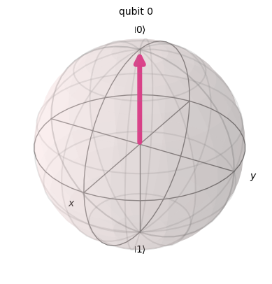
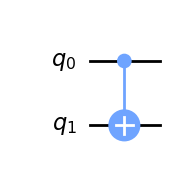

from qiskit import (QuantumCircuit, QuantumRegister, ClassicalRegister,
execute, Aer, __qiskit_version__)
from qiskit.visualization import plot_bloch_multivector
import matplotlib as mpl
import matplotlib.pyplot as plt
import warnings
warnings.filterwarnings('ignore')Bramki wielokubitowe
def obwod(strategia):
qc = QuantumCircuit(QuantumRegister(1, name='qGra'))
for bramka in strategia:
if bramka == 'I':
qc.id(0)
elif bramka == 'H':
qc.h(0)
elif bramka == 'X':
qc.x(0)
return qc
%matplotlib inline
def animacja(strategia):
qc = QuantumCircuit(QuantumRegister(1, name="q0"))
symulator = Aer.get_backend('statevector_simulator')
wynik = execute(qc, backend=symulator).result()
stan = wynik.get_statevector()
display(stan)
print("stan poczatkowy:")
display(plot_bloch_multivector(stan))
plt.show()
for it, bramka in enumerate(strategia):
if bramka == 'I':
qc.id(0)
elif bramka == 'H':
qc.h(0)
elif bramka == 'X':
qc.x(0)
wynik = execute(qc, backend=symulator).result()
stan = wynik.get_statevector()
print("stan po bramce", bramka)
display(plot_bloch_multivector(stan))
plt.show()strategia = 'XXX'
display(obwod(strategia).draw('mpl'))
animacja(strategia)Statevector([1.+0.j, 0.+0.j],
dims=(2,))
stan poczatkowy:
stan po bramce X
stan po bramce X
stan po bramce X
def sedzia(obwod):
qr = QuantumRegister(1)
cr = ClassicalRegister(1)
ob = QuantumCircuit(qr, cr)
ob.append(obwod, qr)
ob.measure(0, 0)
return execute(ob, backend=Aer.get_backend('qasm_simulator'), shots=1000).result()strategia = 'XXX'
stats = sedzia(obwod(strategia)).get_counts()
print(stats){'1': 1000}strategia = 'HXH'
stats = sedzia(obwod(strategia)).get_counts()
print(stats){'0': 1000}def klasycze_strategie():
wyniki = []
for ruch_1 in ['I','X']:
for ruch_2 in ['I','X']:
for ruch_3 in ['I','X']:
strategia = ruch_1 + ruch_2 + ruch_3
print("strategia",strategia)
ob = obwod(strategia)
display(ob.draw('mpl'))
plt.show()
stats = sedzia(ob).get_counts()
print("statystyka", stats)
wyniki.append((strategia, stats))klasycze_strategie()strategia IIIstatystyka {'0': 1000}
strategia IIXstatystyka {'1': 1000}
strategia IXIstatystyka {'1': 1000}
strategia IXXstatystyka {'0': 1000}
strategia XIIstatystyka {'1': 1000}
strategia XIXstatystyka {'0': 1000}
strategia XXI
statystyka {'0': 1000}
strategia XXX
statystyka {'1': 1000}def kwantowe_strategie():
wyniki = []
for ruch_1 in ['H']:
for ruch_2 in ['I','X']:
for ruch_3 in ['H']:
strategia = ruch_1 + ruch_2 + ruch_3
print("strategia",strategia)
ob = obwod(strategia)
display(ob.draw('mpl'))
plt.show()
stats = sedzia(ob).get_counts()
print("statystyka", stats)
wyniki.append((strategia, stats))kwantowe_strategie()strategia HIHstatystyka {'0': 1000}
strategia HXH
statystyka {'0': 1000}Proste obwody kwantowe
Barriers - służą do oddzielenia logicznych części obwodu. Nie mają wpływu na działanie obwodu, ale mogą pomóc w jego czytelności.
from qiskit import QuantumCircuit
qc = QuantumCircuit(2,4)
qc.h(0)
qc.measure([1,0],[2,3])
qc.draw('mpl')from qiskit import QuantumCircuit
qc = QuantumCircuit(2,4)
qc.h(0)
qc.barrier()
qc.measure([1,0],[2,3])
qc.draw('mpl')Losowy bajt
# generator liczb losowych
from random import randrange
''.join([str(randrange(2)) for i in range(8)])'00011001'# mozna takze zrealizowac jako rzut monetą
import random
for n in range(5):
if random.random()<0.5: #if the random number is less than 0.5 print heads
print('HEADS')
else:
print('TAILS')HEADS
TAILS
TAILS
HEADS
TAILS# LOSOWY BAJT
from qiskit import QuantumCircuit, QuantumRegister, ClassicalRegister, execute, Aer
q = QuantumRegister(8)
c = ClassicalRegister(8)
qc = QuantumCircuit(q,c)
# tutaj kod losowania
for i in range(8):
if randrange(2) == 0:
qc.x(q[i])
qc.barrier()
qc.measure(q,c)
qc.draw('mpl')job = execute(qc, Aer.get_backend('qasm_simulator'), shots=10)
counts = job.result().get_counts()counts{'00100100': 10}print(list(counts)[0], "wynosi: ", int(list(counts)[0],2))00100100 wynosi: 36# losowy kwantowo bajt
# LOSOWY BAJT
from qiskit import QuantumCircuit, QuantumRegister, ClassicalRegister, execute, Aer
q = QuantumRegister(8)
c = ClassicalRegister(8)
qc = QuantumCircuit(q,c)
# tutaj kod losowania
qc.h(q)
qc.barrier()
qc.measure(q,c)
display(qc.draw('mpl'))
job = execute(qc, Aer.get_backend('qasm_simulator'), shots=10)
counts = job.result().get_counts()
counts{'01000110': 1,
'00001001': 1,
'00100100': 1,
'11000000': 1,
'01000011': 1,
'11010001': 1,
'11100110': 1,
'11100100': 1,
'10101011': 1,
'11001100': 1}for el in counts:
print(int(el,2))70
9
36
192
67
209
230
228
171
204# losowanie z zakresu liczb 0-15
n = 4
q = QuantumRegister(n)
c = ClassicalRegister(n)
circuit = QuantumCircuit(q, c)
for j in range(n):
circuit.h(q[j])
circuit.measure(q,c)
job = execute(circuit, Aer.get_backend('qasm_simulator'), shots=1000)
# get the histogram of bit string results, convert it to one of integers and plot it
bit_counts = job.result().get_counts()
int_counts = {}
for bitstring in bit_counts:
int_counts[ int(bitstring,2) ] = bit_counts[bitstring]
from qiskit.tools.visualization import plot_histogram
plot_histogram(int_counts)SWAP GATE
\[ \text{SWAP}\ket{01} = \ket{10} \]
qc = QuantumCircuit(2)
qc.x(0)
qc.swap(0,1)
qc.measure_all()
qc.draw('mpl')counts = execute(qc, Aer.get_backend('qasm_simulator'), shots=1).result()
counts.get_counts()Stany splątane
qr = QuantumRegister(2)
qc = QuantumCircuit(qr)
qc.h(qr[0])
qc.cx(0,1)
backend = Aer.get_backend('statevector_simulator')
job = execute(qc, backend)
result = job.result()
state = result.get_statevector()display(qc.draw('mpl'))
state.draw('latex')\[\frac{\sqrt{2}}{2} |00\rangle+\frac{\sqrt{2}}{2} |11\rangle\]
qr = QuantumRegister(2)
qc = QuantumCircuit(qr)
qc.h(qr[0])
qc.cx(0,1)
qc.x(1)
backend = Aer.get_backend('statevector_simulator')
job = execute(qc, backend)
result = job.result()
state = result.get_statevector()
display(qc.draw('mpl'))
state.draw('latex')\[\frac{\sqrt{2}}{2} |01\rangle+\frac{\sqrt{2}}{2} |10\rangle\]
qr = QuantumRegister(2)
qc = QuantumCircuit(qr)
qc.h(qr[0])
qc.cx(0,1)
qc.z(1)
backend = Aer.get_backend('statevector_simulator')
job = execute(qc, backend)
result = job.result()
state = result.get_statevector()
display(qc.draw('mpl'))
state.draw('latex')\[\frac{\sqrt{2}}{2} |00\rangle- \frac{\sqrt{2}}{2} |11\rangle\]
qr = QuantumRegister(2)
qc = QuantumCircuit(qr)
qc.h(qr[0])
qc.cx(0,1)
qc.x(1)
qc.z(1)
backend = Aer.get_backend('statevector_simulator')
job = execute(qc, backend)
result = job.result()
state = result.get_statevector()
display(qc.draw('mpl'))
state.draw('latex')\[\frac{\sqrt{2}}{2} |01\rangle- \frac{\sqrt{2}}{2} |10\rangle\]
Half adder cirquit
Napisz operator 1+1 na układzie 4 kubitów
\[ 0+0 = 00 \] \[ 0+1 = 01 \] \[ 1+0 = 01 \] \[ 1+1 = 10 \]
zauwaz, ze mamy dwa typy rozwiązań:
- dwa bity wejsciowe są takie same (00, 11) i dają na prawym bicie odpowiedzi 0.
- dwa bity wejsciowe są rózne (10,01) i dają na prawym bicie odpowiedzi 1.
Aby napisać prawidłowe rozwiązanie musimy stworzyć bramki, które będą rozpoznawać czy dwa kubity są takie same czy tez rózne. Dla przypomnienia - klasycznie rolę taką pełni bramka XOR.
| Input 1 | Input 2 | XOR |
|---|---|---|
| 0 | 0 | 0 |
| 0 | 1 | 1 |
| 1 | 1 | 1 |
| 1 | 0 | 0 |
Podobnie działa bramka CNOT
qc = QuantumCircuit(2)
qc.cx(0,1)
qc.draw(output='mpl')
qc = QuantumCircuit(4,2)
# zakodowanie danych wejściowych do kubitu 1 i 2
qc.x(0)
qc.x(1) # bo chcemy policzyc 1+1
# uzyjemy CNOT - bramka XOR dla porownania kubitow 1 i 2
qc.cx(0,2)
qc.cx(1,2)
qc.measure(2,0) # wydobycie wyniku XOR
qc.measure(3,1) # wydobycie wyniku AND
qc.draw(output='mpl')Zastosowanie dwóch CNOT do inputów rozwiązuje nam problem prawego bitu odpowiedzi.
Co z pierszym bitem odpowiedzi otrzymywanym po pomiarzze q3 ?
- jego wartość dla pierwszych trzech równań zawsze wynosi 0.
Jednak dla równania 1+1 powinniśmy otrzymać 1.
Do rozwiązania tego problemu mozna wykorzystać bramkę operującą na 3 kubitach. Bramka ta to bramka Toffoli.
qc = QuantumCircuit(4,2)
# zakodowanie danych wejściowych do kubitu 1 i 2
qc.x(0)
qc.x(1) # bo chcemy policzyc 1+1
# uzyjemy CNOT
qc.cx(0,2)
qc.cx(1,2)
qc.ccx(0,1,3) # AND
qc.measure(2,0) # wydobycie wyniku XOR
qc.measure(3,1) # wydobycie wyniku AND
qc.draw(output='mpl')from qiskit.visualization import plot_histogram
counts = execute(qc,Aer.get_backend('qasm_simulator'),shots=1).result().get_counts()
plot_histogram(counts)
Dla przypomnienia:
print("wynik 1+1 =",int('10',2))wynik 1+1 = 2sprawdźmy wszystkie mozliwe wyniki
for input in ['00','01','10','11']:
mycircuit1 = QuantumCircuit(4,2)
#Initialization - Note qiskit order
if input[0] == '1':
mycircuit1.x(1)
if input[1] == '1':
mycircuit1.x(0)
mycircuit1.cx(0,2)
mycircuit1.cx(1,2)
mycircuit1.ccx(0,1,3)
mycircuit1.measure(2,0)
mycircuit1.measure(3,1)
job = execute(mycircuit1,Aer.get_backend('qasm_simulator'),shots=1)
counts = job.result().get_counts(mycircuit1)
print("Input:", input, "Output:", counts)Input: 00 Output: {'00': 1}
Input: 01 Output: {'01': 1}
Input: 10 Output: {'01': 1}
Input: 11 Output: {'10': 1}Zadanie - czy potrafisz utworzyć 3 kubitową wersję bramki
OR